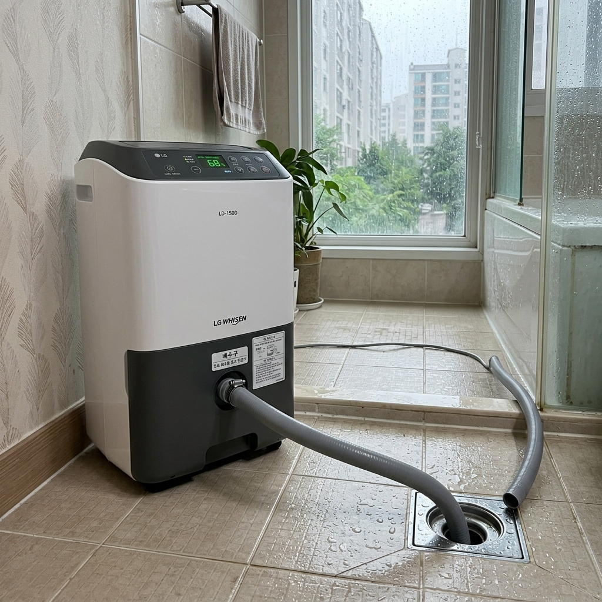
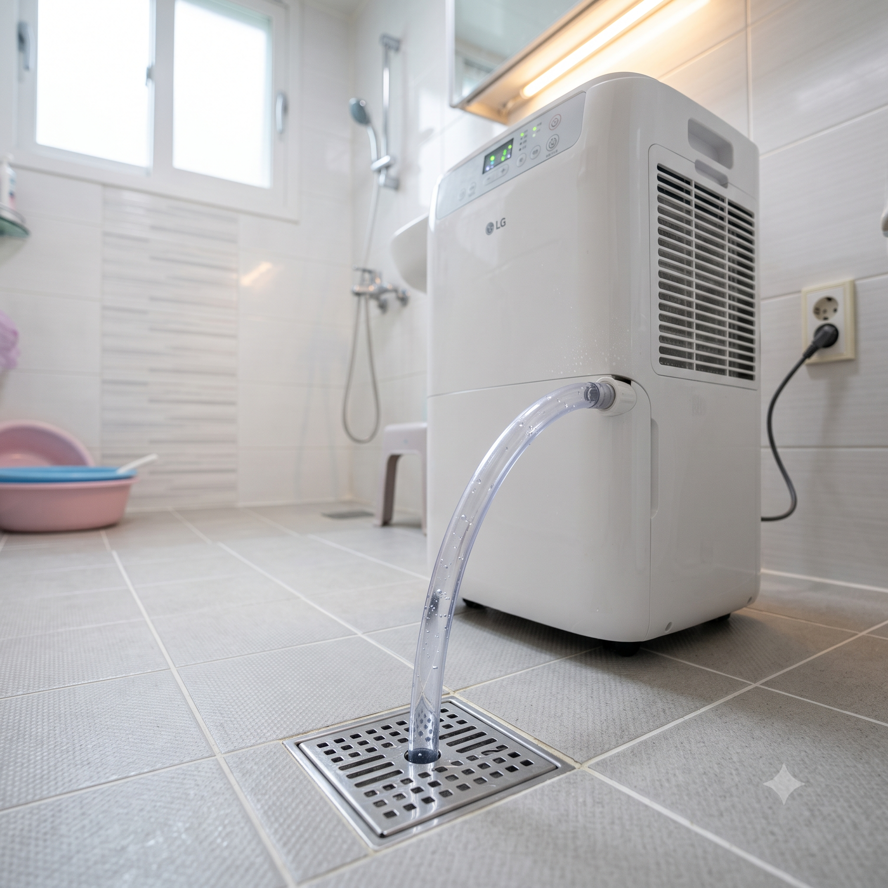
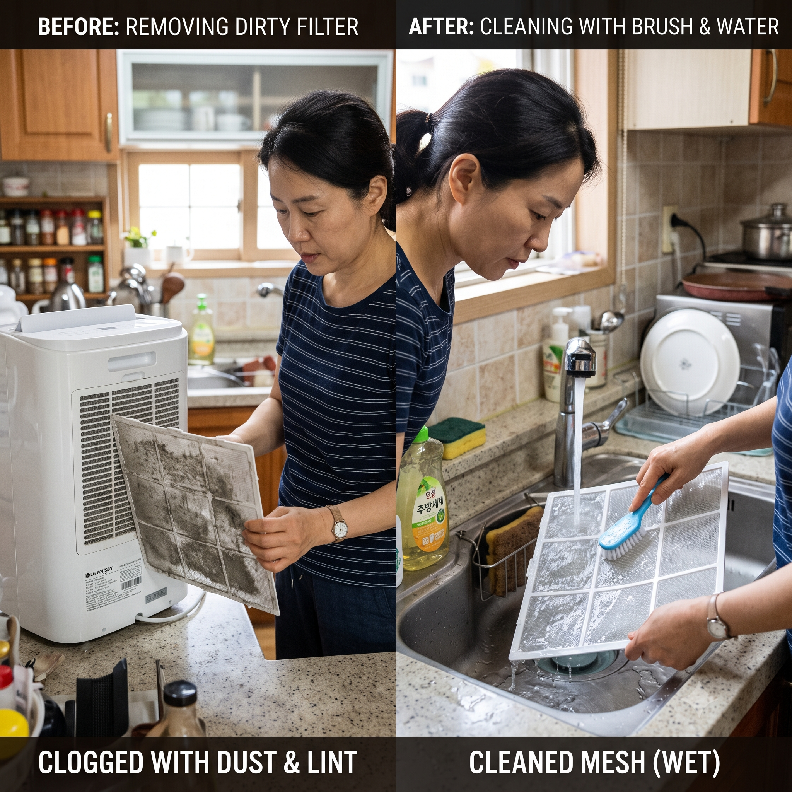

장마철 제습기 연속배수 설정하는 법과 탱크 곰팡이 냄새 원인 없애기
✍️ 경험박스
작년 장마 때 제습기를 24시간 틀어뒀다가 새벽 3시에 알람 소리에 깨어난 적이 있습니다. 물통이 가득 찼다는 경고음이었습니다. 잠을 깨서 물통을 비우고 다시 잠들었는데, 또 몇 시간 뒤에 울려서 결국 제습기를 꺼버렸습니다. 그 이후 연속배수 호스를 연결했더니 이런 일이 없어졌습니다. 진작 설정할걸 싶었습니다.
01. 장마철 제습기 물통이 빨리 차는 이유
7월 장마철에는 실내 습도가 80~90%까지 오르는 날이 많습니다. 이 상태에서 제습기를 가동하면 공기 중 수분을 엄청나게 빨아들이기 때문에 20리터 물통도 불과 몇 시간 만에 가득 찹니다. 물통이 차면 안전을 위해 자동으로 멈추는 구조라 제습기가 자꾸 꺼지는 것입니다.
이 문제를 해결하는 방법이
연속배수(連續排水)입니다. 제습기 뒷면이나 측면 배수구에 호스를 연결해 물을 바로 하수구로 내보내는 방식입니다. 물통을 비울 필요 없이 제습기가 쉬지 않고 돌아갑니다.

제습기 뒷면 배수구에 연결된 연속배수 호스 / AI 제작 이미지
02. 연속배수 설정 방법 — 5단계
①
전원을 끄고 물통을 뺍니다. 물통이 있던 자리 안쪽이나 제습기 뒷면 하단에 배수구가 있습니다.
②
배수 호스를 준비합니다. 구매 시 동봉된 호스를 사용하거나, 배수구 지름(16~18mm)에 맞는 호스를 별도 구매합니다.
③
호스를 배수구에 연결합니다. 나사형은 돌려서 잠그고, 끼움형은 밀어 넣어 고정합니다. 잡아당겨서 빠지지 않으면 정상입니다.
④
호스를 하수구로 연결합니다. 욕실 바닥 하수구 또는 세면대 배수구로 연결합니다. 호스 전체 경로가 제습기에서 아래로 내려가야 물이 흐릅니다. U자 모양으로 올라가는 구간이 있으면 물이 역류합니다.
⑤
전원을 켜고 테스트합니다. 잠시 후 호스 끝에서 물이 나오는지 확인합니다. 제습기 아래로 물이 새면 호스 연결 부위를 점검하세요.
03. 곰팡이 냄새의 세 가지 원인
제습기에서 퀴퀴한 냄새가 나는 이유는 크게 세 가지입니다.
1. 필터 오염: 공기와 함께 흡입된 먼지가 필터에 쌓이고 수분과 만나 곰팡이가 번식합니다. 가장 흔한 원인입니다.
2. 물통 슬라임: 물통에 고인 물이 방치되면 점액성 물질(슬라임)과 곰팡이가 생깁니다. 연속배수를 써도 물통 내부 잔여 수분에서 냄새가 날 수 있습니다.
3. 열교환기 오염: 제습기 내부 열교환기(증발기)에 먼지와 수분이 쌓이면 세균·곰팡이가 번식합니다. 필터 청소만으로는 해결이 어렵고, 전문 청소가 필요한 경우도 있습니다.

연속배수 호스가 정상적으로 하수구에 연결된 상태 / AI 제작 이미지
04. 곰팡이 냄새 없애는 청소 방법
필터 청소 (월 1회 이상)
필터를 꺼내 미지근한 물로 헹굽니다. 오염이 심하면 식초물(물: 식초 = 10:1)에 10~20분 담갔다가 헹굽니다. 완전히 건조 후 재장착합니다. 젖은 상태로 넣으면 역효과입니다.
물통 청소 (주 1회 이상)
물통을 비우고 세제로 꼼꼼히 씻습니다. 락스 희석액(락스: 물 = 1:100)으로 닦으면 더 효과적이지만, 충분히 헹궈야 합니다.
내부 건조 운전
냄새 제거 목적으로 빈 방에서 창문을 열고 2~3시간 가동하면 내부 수분이 마르면서 냄새가 줄어듭니다. 세정 모드가 있는 제품은 해당 모드를 활용하세요.
05. 적정 습도와 전기 절약 팁
실내 적정 습도는
50~60%입니다. 제습기 목표 습도를 55%로 설정하면 도달 시 자동으로 멈춰 전기를 절약할 수 있습니다.
제습기는 문을 닫고 운전할 때 효율이 훨씬 좋습니다. 창문과 문을 닫은 밀폐 공간에서 가동하세요. 환기는 제습기를 끄고 짧게 합니다.

제습기 필터 분리 후 청소하는 모습 / AI 제작 이미지
06. 장마 끝나고 보관하는 법
장마가 끝나면 다음 순서로 보관하세요.
① 물통을 비우고 세척·건조 ② 필터 청소 후 재장착 ③ 내부 건조 운전 30분~1시간 ④ 전원 끄고 식힌 뒤 커버 씌워 보관 ⑤ 서늘하고 건조한 곳에 세워서 보관 (눕히면 냉매액 흘러 고장 위험)
📝 작성자 메모
연속배수 호스를 연결했더니 생각보다 신세계였습니다. 이걸 왜 진작 안 했을까 싶었습니다. 호스 길이는 최대한 짧고 직선으로 잡는 것이 포인트입니다. 제가 처음에 긴 호스를 구불구불하게 연결했더니 물이 역류해서 바닥이 젖은 경험이 있습니다. 호스는 제습기 배수구에서 하수구까지 일직선에 가깝게 내려가도록 설치하는 게 핵심입니다.
#제습기연속배수
#장마제습기
#제습기냄새
#제습기관리
#제습기청소
#물통안비우기
#곰팡이냄새없애기
#여름가전
#제습기필터
#실내습도조절